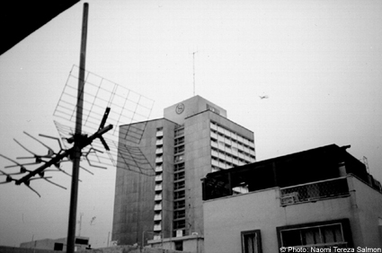

|

"Time + Space = Place", 2002. „...Space seems to be either more tamed or more harmless than time: one meets everywhere people with watches, and very seldom people who have binnacles. One must always know what time it is, (and who can calculate it from the position of the sun anymore?), yet one never asks oneself where one is, one believes one knows it: One is at home, one is in one’s office, one is in the Metro, one is in the street. That is naturally evident – but what isn’t evident? One should ask oneself from time to time where one is: make an interim balance: not only about his state of mind, his health, his ambitions, his belief and his right of existence, but above all about the topographical position, and not only in view of a place or a person one thinks about, or starts, in this sense, to think about. (Georges Perec) I am on the roof, on the balcony, in the study. I’m in this town, in the other one, or oversees. I hear church bells, a door is slammed, dogs bark. A bicycle bell is ringing, a kid screams: „Quiet!“, Ravens. An airplain, muezzins, a shot, a telephone rings. More bells, traffic, a bomb – (nts) "TO HEAR IS TO SEE - Art in Electronic Space, for Example Radio Art and Sound Sculpture" a project developed during 1995. The focus is on art in electronic space, for example radio art, sound sculpture or radio images, lasting anything from two minutes to two hours. Further, the exhibition, which brings to life a project with the motto "To Hear is to See", moves on three levels of artistic content: IMAGE, SOUND and TEXT. The artists participating come from a variety of fields, such as literature, sculpture, film, painting, theatre and last but not least music. The idea is that, on the one hand, the door to a wider audience should be opened for experimental sound works, while on the other hand the principle of space, or the notion of space, or even the related notion of sculpture, which in turn derives from that of the body, should be redefined, presented by way of example, by means of the photographs shown in the exhibition, and explained through the texts, whether prose, poetry or technical descriptions, which are also used as moderation texts for the sound works in radio broadcasts. The acoustic works, which were created using noises and a wide variety of sound structures (e.g. bird twittering, hand-clapping/ applause or street noise), not only demonstrate the wide range of artistic variations, but also represent for the listener/spectator the possibilities of working intellectually and creatively on a global basis in the pictorial or physical field, and (also) an expression of creative activity. The fact that, further, inspiration too can arise through artistic intervention is proved precisely by this project, in that it employs a wide variety of viewpoints, expressed in linguistic, acoustic and visual form, in order to bring together, without compromising, a plurality of perceptive intentions deriving from a variety of people. In order to play the game in electronic space, as in this concrete case, a radio station is of course necessary. A further condition for the conceptional functioning of the project is the presence of a main receiver, for example a museum or exhibition space. Here, the sound sculptures, soundscapes and sound images are transmitted and made audible via radio receiver, stereo amplification system and loudspeakers. Further, as mentioned before, the artists' associations on their respective sound works are presented in the form of photographs and texts.?It should be emphasised that in the actually visible exhibition of text and image, what is to be depicted is only connected to that which is depicted in so far as it can be understood as a possible example of the embodiment of image and content, but does not have to be understood as this embodiment itself. Naomi Tereza Salmon - "To Hear Is To See" Audio Sequence, .mp3 format Close Window All content copyright 2006 Naomi Tereza Salmon - all rights reserved |